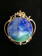

|  | 作品名稱 | 微觀No.2 Microcosm II |
| 作者 | 魏彤珈Wei Tong-jia | |
| 年代 | 2015 | |
| 尺寸 | 4×7.5×1.3 | |
| 作品說明 | 金工與廢瓷版結合緣起 瓷版畫的作畫與大家熟悉的繪畫方式截然不同，它無法即刻得知畫面效果。 當釉藥施作到素燒胚體時，每個噴刷淋灑過程，只顯現淺色調的粉末堆疊。孫超必須清晰記得作畫過程中，所施的釉方、厚薄與圖案，在心中架構窯燒後所能呈現的效果。晶花亦非畫上去，其生成的形狀、疏密，與窯溫及施釉厚薄有關，色彩則取決於不同的金屬氧化物。令人讚嘆的結晶釉作品，除創作者本身的涵養與專業技能外，還有許多難以控制的因素影響。能讓孫超留下的作品比例極少。出窯後敲毀的瓷版，堆積成山最終磨成粉末。魏彤珈深知每片瓷版得來不易，促使她思考——如何以自身的工藝能力賦予廢瓷版新生。在敲掉的瓷片中，套以各式挖空的型版，恰如相機取景框來擷取畫面。鑽石鋸片裁切粗胚，滴水細細打磨成型並量身訂製銀框。金屬也有其晶體，只是肉眼無法見。「微觀系列」以金工的技法——雕刻、熱貼金（keum boo）、敲花、架構焊接，仿作晶花的紋飾與結晶釉花相呼應。金屬的素雅更凸顯廢瓷版重生後的絢麗。 |